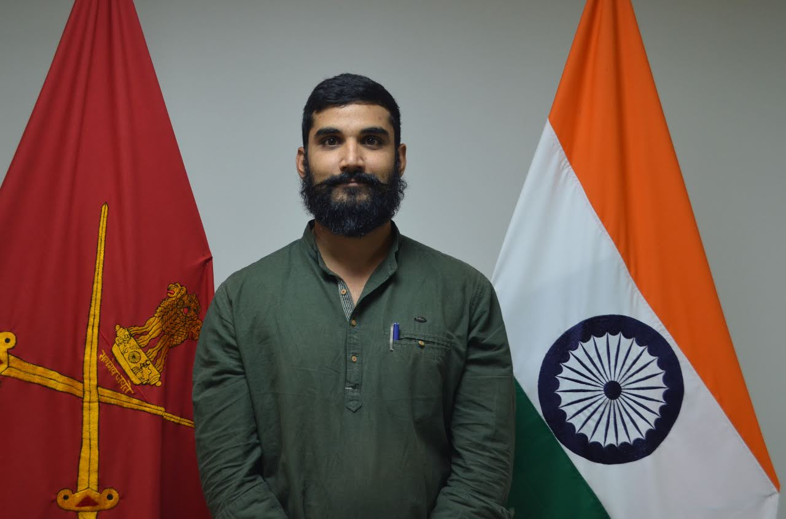
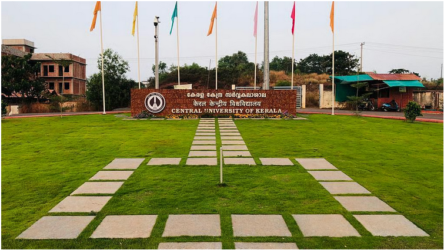
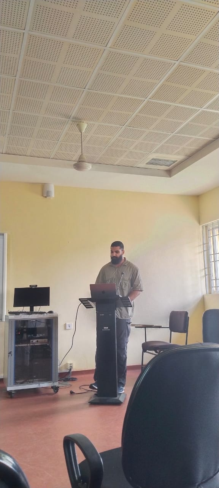
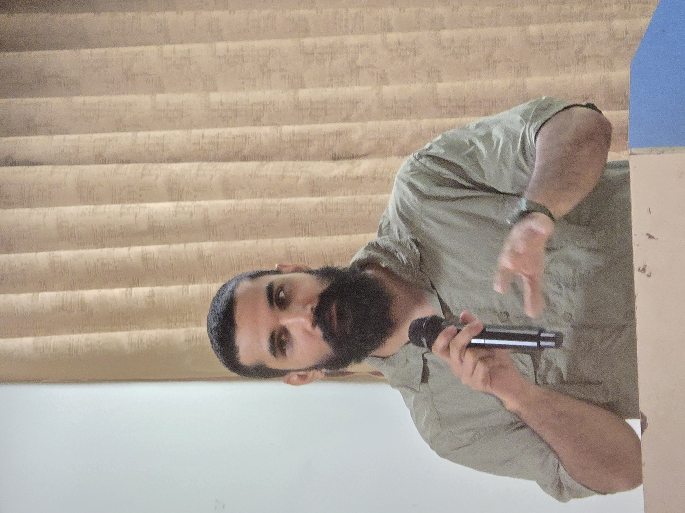
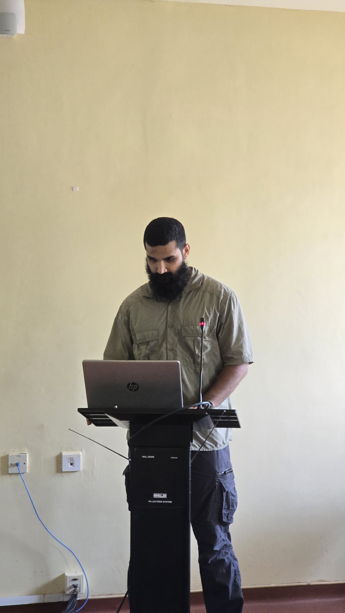
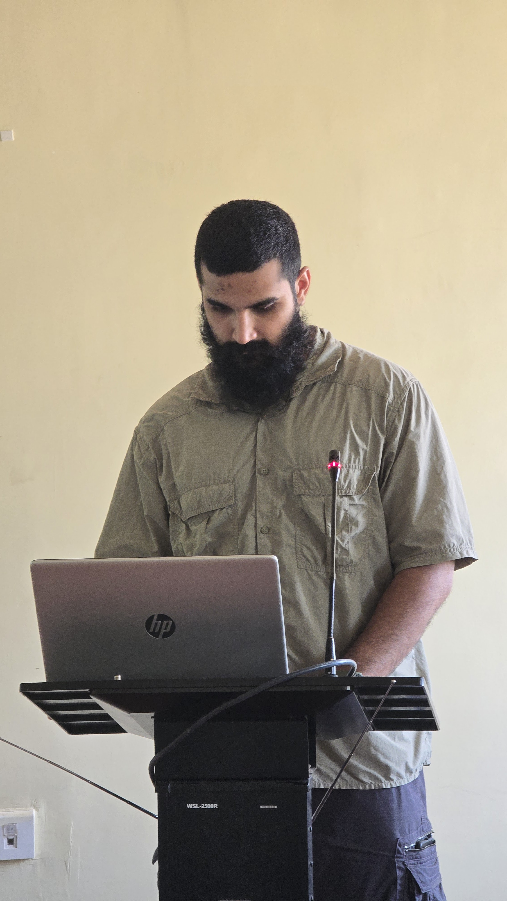
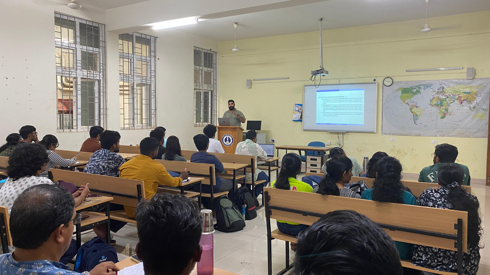
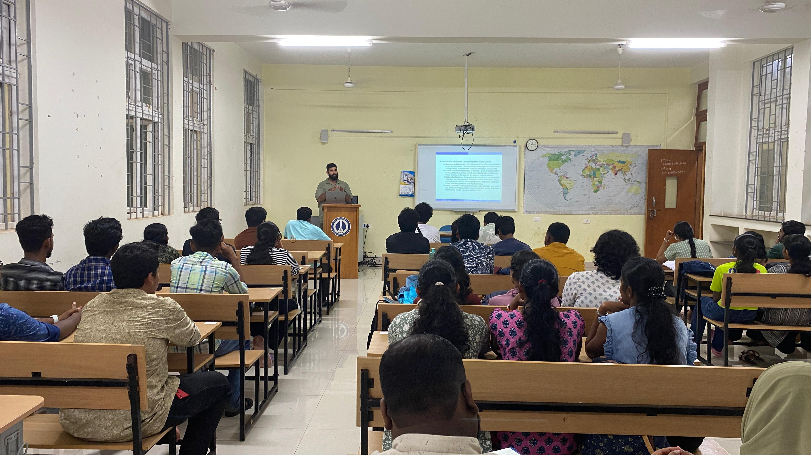

International Relations & Politics
Senior Research Fellow & PhD Candidate at the Department of International Relations & Politics, Central University of Kerala. Researching status-seeking strategies, Indo-Pacific security architecture, and multiplex world order through Social Identity Theory and quantitative methods.
Working Papers
Conferences
Years Research


I am a Senior Research Fellow & PhD Candidate in the Department of International Relations & Politics at the Central University of Kerala, Kasaragod. My doctoral research examines Status, Regions, and Rising Powers in the Emerging World Order: A Case Study of India, funded by UGC-SRF.
With a strong interdisciplinary background—holding an MA in Political Science (University Gold Medal, Maharshi Dayanand University) and an MSc in Mathematics—I combine quantitative methodology with IR theory, particularly Social Identity Theory, to analyze India's status-seeking strategies in a multiplex world order.
I am an active contributor to academic discourse through conference presentations, invited talks, peer review for international journals, and published working papers on Indo-Pacific security, nuclear order, and maritime multipolarity.
My research spans several interconnected domains within international relations, each contributing to a broader understanding of global political dynamics.
State-Region Integration, Rising Powers and Status-Seeking Strategies, Social Identity Theory (SIT), and Changing Global Order.
Indo-Pacific Security Architecture, India's SAGAR and MAHASAGAR Initiatives, and maritime security multipolarity in the Indian Ocean Region.
Multiplex World Order, Nuclear Non-Proliferation, India's Role in the NSG, and the evolving architecture of international institutions.
Statistical Analysis in Social Sciences (R, Stata), Data Visualization, QGIS mapping, and advanced research methodology in humanities.
Thesis: Status, Regions, and Rising Powers in the Emerging World Order: A Case Study of India. Course Work GPA: 8.80. Funded by UGC (Nov 2023 – Nov 2026).
Thesis: Status Seeking through Conspicuous Co-operation: Exploring India's Status in the World Order.
CGPA: 7.86 · University Gold Medallist
Research on Status, Regions, and Rising Powers in the Emerging World Order: A Case Study of India.
Affiliated from PMML for Dr. Vinod Thakur, Leiden University, Netherlands.
Topic: India's SAGAR Initiative in the Indo-Pacific Region and its Possible Outcomes and Challenges. Co-authored working paper on maritime security multiplex with Dr. L.R. Choudhary.
Topic: Status Seeking through Conspicuous Co-operation: Exploring India's Status in the World Order.
Managed the National Seminar on Civil-Military Integration.
Research papers submitted to peer-reviewed journals contributing to international relations scholarship.
Dept. of IR, Central University of Kerala
Paper: Multipolar, Multipolarity, and India's Status SeekingUniversity of Kerala, Thiruvananthapuram
Paper: India and its Global Nuclear OrderGujarat University, Ahmedabad
Paper: India's Status in the Indo-PacificCentre for Defence & Security Studies, Central University of Kerala
ParticipantSocial Science Research Centre, University of Rajasthan, Jaipur
ParticipantDept. of Political Science, Central University of Haryana
ParticipantPayyanur College, Kerala
Invited TalkE.K. Nayanar Memorial Govt. College, Kasaragod
Invited TalkCapital Centre, Central University of Kerala
Theme PaperRStudio, Stata: Advanced statistical modelling, data cleaning, and hypothesis testing.
NVivo: Thematic coding and analysis of semi-structured interviews, policy documents, and speech transcripts.
QGIS, Datawrapper: Mapping maritime-security multipolarity and creating interactive data visualizations.
LaTeX, Office 365: Professional typesetting for technical manuscripts and complex document formatting.
Zotero, Mendeley, EndNote: Advanced literature management; APA, Chicago, Harvard citation formatting.
Hindi: Native · English: Fluent (Academic & Professional) · German: Level 1 (In progress)
In-depth reviews and critical analysis of key texts in international relations, political theory, and global governance.
A transformative work arguing that the liberal hegemonic order is giving way to a "multiplex world" — a system of multiple, overlapping orders rather than a single superpower-led hierarchy. Acharya's framework provides essential tools for understanding India's positioning in the emerging global architecture. The concept of multiplex world order is central to my doctoral research on status-seeking strategies.
This edited volume systematically examines how states seek, attain, and maintain status in the international system. The contributors draw on social psychology, particularly Social Identity Theory, to explain why status matters beyond material capabilities. The framework of status-seeking strategies — social mobility, social competition, and social creativity — has become foundational to my PhD research.
A seminal work tracing India's transformation from a non-aligned idealist to a pragmatic nuclear power. Mohan charts the strategic shifts following the 1998 nuclear tests and India's evolving relationship with the United States. Critical for understanding India's journey toward great power status and the domestic political dynamics shaping foreign policy decisions in the post-Cold War era.
Bull's masterpiece remains indispensable for any serious student of IR. His argument that international society maintains order through shared institutions — diplomacy, international law, balance of power, and great power management — provides a powerful lens for analysing contemporary world politics. The concept of "international society" remains deeply relevant for understanding how rising powers negotiate their roles within existing normative frameworks.
Books and academic texts I'm currently working through, informing my ongoing research and expanding theoretical horizons.
Wendt's constructivist magnum opus challenges the rationalist foundations of international relations — exploring how shared ideas, rather than material forces alone, constitute state identities and interests.
A comprehensive analysis of the Indo-Pacific as a strategic system, examining the contest for influence among major powers and the role of middle powers like India and Australia in shaping regional order.
Larson and Shevchenko explain how Russia and China seek status in the world order.
Marina Duque explains how International Status is made through Interaction between states.
The Book explains the role played by the United States in the making of South Asia.
The Book explains how Pakistan acquired nuclear weapons and the reasons it acquired them.
The Book explains the history of modern Pakistan.
The Book is a biography of Indian Army General Sunderji.
Highlights from conferences, seminars, workshops, and academic engagements.






I welcome academic collaborations, conference invitations, and discussions on international relations and politics.
ravikalonia@gmail.com
Department of International Relations & Politics
Central University of Kerala
Kasaragod, Kerala – 671316